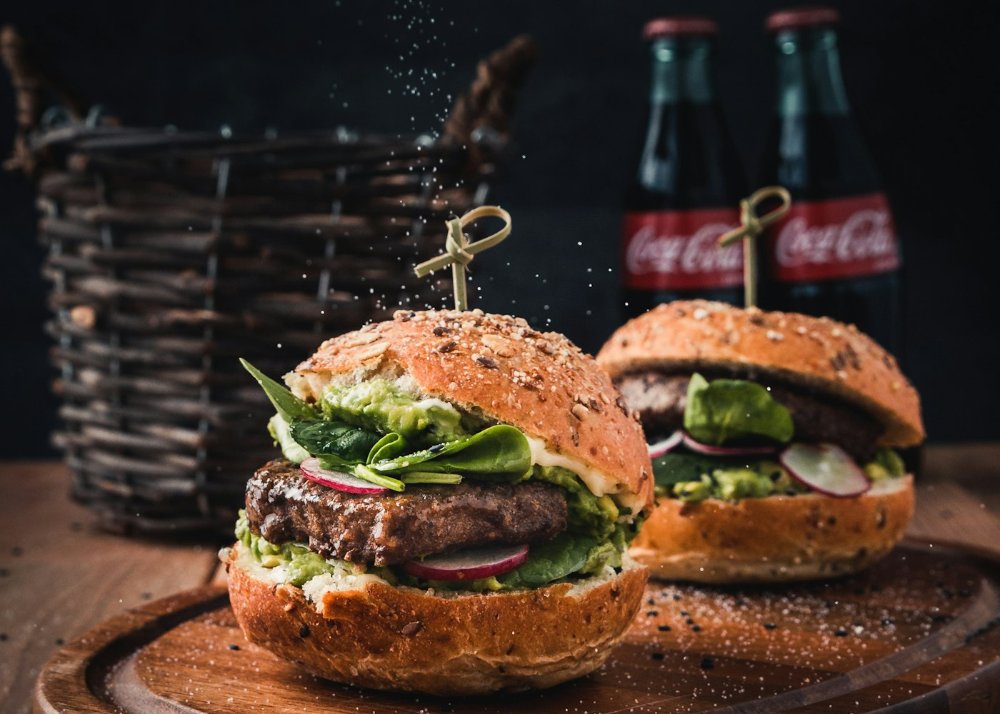

Brasa Clássico
Blend 160g, queijo, salada e molho da casa.
R$ 32BURGERS FEITOS COM FOME DE CAPRICHO
Blend na chapa, pão macio e aquela primeira mordida que faz valer a saída de casa.
O que fazemos
Conheça as opções e escolha o que faz sentido para você.
Blend 160g, queijo, salada e molho da casa.
R$ 32Dois blends, cheddar e cebola caramelizada.
R$ 43Hambúrguer de grão-de-bico e maionese verde.
R$ 34Clássico, fritas e refrigerante.
R$ 47Crocantes, temperadas e generosas.
R$ 19Chocolate, sorvete e mais chocolate.
R$ 22Por dentro
Imagens ilustrativas do universo deste projeto.


Nossa essência
A Brasa nasceu para fazer o simples muito bem: ingredientes frescos, chapa quente e combinações que você vai querer repetir.
Em destaque
Venha sentir o cheiro da chapa.
Peça antes e passe para buscar.
Consulte bairro e taxa pelo WhatsApp.
Quem viveu, recomenda
“O Duplo Fogo virou tradição na sexta-feira. Ponto da carne perfeito.”
Gustavo R., cliente
Antes de começar
Sim, nosso Veggie da Casa é feito com grão-de-bico.
Consulte área e taxa de entrega pelo WhatsApp.
Vamos conversar
Deixe seus dados para simular o contato ou fale agora com nossa equipe.
Conversar no WhatsApp ↗